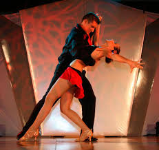

Latin DancesLatin dances like the tango, merengue and salsa are smoother, less "jumpy", than American dances. They're flirtatious and fun, but are also romantic. With movies such as "Scent of a Woman" , "True Lies", "Evita", and now "The Tango Lesson", Tango has had a resurgence, a veritable renaissance, of this marvelously romantic of all dances. Merengue is a dance where the man and woman move side to side, described by some as a dance that looks like moving down a crowded aisle of seats in a movie theater. The Salsa is a catch-all term for Cuban and Colombian mambo-style dances that involve moving back and forth to a four-step beat, with a lot of spinning. |